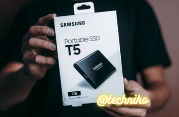

SSD Explained — Everything You Need To Know

Three Fact about Solid-State Drives
Solid-state drives store data in cells made of semiconducting material.
Although sometimes called solid-state disks, these storage devices do not have moving parts and operate silently.
The first enterprise-scale SSD debuted in 1976. The Bulk Core by Dataram had 2MB of memory and cost $9,700.
SSD History
Data storage has always been a limiting factor in the computer industry. System performance depends on the speed of reading and writing information as well as the amount of available data storage. Solid-state drives developed as a faster alternative to traditional hard drives.
The first attempts at SSDs in the 1970s were supplementary storage devices used along with more familiar hard disk drives. Eliminating read-write heads and spinning disks saved space and enabled faster memory recall. However, semiconductor technology was still young, and these early drives were too expensive for implementation outside of larger systems like supercomputers by IBM and Cray.
Quick Facts
Created
1976
Creator
Dataram
Original Use
Data storage
Cost
$9,700 for 2MB
The 1980s saw the invention of a new type of memory storage. Engineer Fujio Masuoka developed flash memory for the Toshiba corporation in 1980. They would introduce the first commercial flash-based SSDs in 1987.
A few years later, in 1991, SanDisk entered the SSD market with a 20MB storage device that sold for about $1,000. From there, improvements in technology have lowered prices and increased capacity. Today, SSDs are a standard piece of hardware in laptops, tablets, and other devices. For supplemental storage, consumers can buy a 1TB drive for less than $100, and units with larger capacities are readily available.
Solid-State Drive: How It Worked
An SSD storage device stores data in a series of memory cells made from a semiconducting material. Early solid-state products employed charge-coupled devices and DRAM technology. While these devices could read and write faster than hard drives, they were bulky and expensive. The inability to partially erase the devices to rewrite data was another drawback.
Solid-state drive technology became commercially feasible with the invention of flash memory in the 1980s. Flash technology uses floating-gate transistors to store bits of memory in series. Breaking data into accessible blocks makes it possible to read, write and erase data at a rate compatible with fast CPUs. This increased speed enabled the use of these storage devices in laptops, phones, and digital cameras. SSDs empower the fast performance that consumers have come to expect.
SSD vs HDD
Computer-users of a certain age will remember the whirring and buzzing of a hard disk drive as their computer came online. A hard drive in a computer involves a spinning disk with a magnetic coating to store information. An attached read/write arm accesses and enters information. Because reading data requires mechanical action, hard drives are louder and slower than SSDs. However, as a mature technology, users can purchase more storage space at a lower price point.
Without any moving parts, SSDs have become standard hardware in new devices. They can store memory in a smaller space and read it faster than mechanical disk drives. However, each block of an SSD can go through a limited number of program/erase cycles. For most users, this limit will not be a problem. They will most likely replace the device before seeing errors due to failed blocks. However, users who frequently update files or create new projects may encounter problems sooner.
SSD: Historical Significance
The invention of the solid-state drive led to a new era in technology. One of the primary benefits of SSDs was their compact size. In the late 1970s and early 80s, people imagined stationary desktops when they thought about computers. Early laptops, while portable, were still hefty pieces of equipment. With SSD technology, consumers could purchase personal devices that were both portable and powerful.
Placing an SSD in a laptop also improved its performance. Solid-state drives minimize bootup time and move information faster from storage to the motherboard. The resulting improvements in processing speed have empowered the progress of many types of hardware technologies. The gaming and simulation industries have also seen the performance-related benefits of the move to SSDs.
SSD Explained — Everything You Need To Know FAQs (Frequently Asked Questions)
What is an SSD?
A solid-state drive is a data storage device that uses a series of cells made from a semiconducting material. Each cell can store a uniform number of memory bits. Flash drives have no moving parts and reliably store data when removed from their power source.
When was the solid-state drive created?
Solid-state drive technology emerged in the 1970s. However, it was not until the invention of flash memory in the 1980s that SSDs came into common use.
What is an SSD, and do I need it?
If you have purchased an electronic device like a camera, smartphone or laptop, you probably already have an SSD. The benefits of this technology like small physical size and faster data access have made them essential to the current generation of personal devices.
What is a solid-state drive used for?
Consumers may associate flash drives with the ubiquitous data sticks that simplify transferring files from one device to another. However, since the 2000s, manufacturers have been using flash memory in place of hard disk drives in laptops and other personal devices. Flash memory is also a common feature in digital cameras and smartphones.
What are the four types of SSDs?
Solid-state drive manufacturers have been working to increase storage capacity without sacrificing reliability. The effort has resulted in four major types of SSDs distinguished by the number of bits in each cell.
SLC: Single-level cell SSDs are the most reliable but most expensive solid-state drives. Each cell contains a single bit and is reliable for up to 100,000 rewrites.
MLC: Multi-level cell drives contain two bits per cell. This increased capacity leads to a lower cost, but it also brings a significant decrease in program/erase cycles with a maximum of 10,000.
TLC: Triple-level cell drives have three bits per cell. With only 5,000 erasures per cell, manufacturers use these drives for storing data in electronic devices that are not subject to frequent changes.
QLC: Quad-level cell drives increase the number of bits to four. These SSDs will lower the cost of electronic devices by providing inexpensive storage for read-only applications.<
What should you not do with an SSD?
Solid-state drives are a beneficial data storage technology. However, they have limitations, and users should avoid some practices to protect their data.
Defragmentation: Rearranging the information on a hard disk drive was a regular maintenance task to improve performance. Defragging is unnecessary on an SSD and will waste program/erase cycles.
Older Operating Systems: Before Windows 7, operating systems did not take SSD technology into account. These programs will treat the information on solid-state drives as they would a hard disk drive, shortening the life of the SSD.
Archival Storage: The memory gates that control SSD information will degrade over time, especially if disconnected from a power source. Photographs and other data stored over time are best kept on optical media like CDs and DVDs.